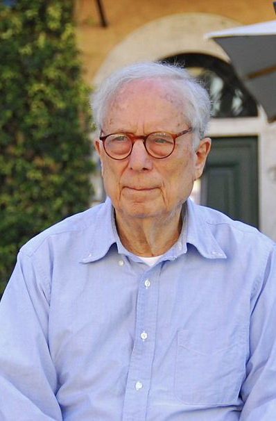

로버트 벤투리
로버트 벤투리(영어: Robert Charles Venturi Jr, 1925년 6월 25일 ~ 2018년 9월 18일)은
미국의 건축가로, 20세기 건축의 중요한 인물이다.
그의 부인이자 파트너인 데니스 스콧 브라운과 함께 건축가와 도시계획가로 활동했고,
학생들이 건축과 미국의 건조 환경에 대한 생각을 형성하는 데에 많은 도움을 주었다.

로버트 벤투리의 일생
- 1.미국 펜실베이니아주의 필라델피아에서 출생하였다.
- 2.프린스턴 대학을 졸업한 후 1958년까지 사리넨과 루이스 칸의 사무소 등지에서 일을 하다가 자신의 건축회사를 설립하였다.
- 3.1959년 펜실베이니아 대학에서 부교수로, 1965년부터 1970년까지 예일대학 교수로 재직하였다.
- 4.그의 작품의 특징은 고도의 다양한 표현이 특징인 지각심리학적 요소들을 건축용어로 변환시키고자 노력한 결정체로 나타난다.